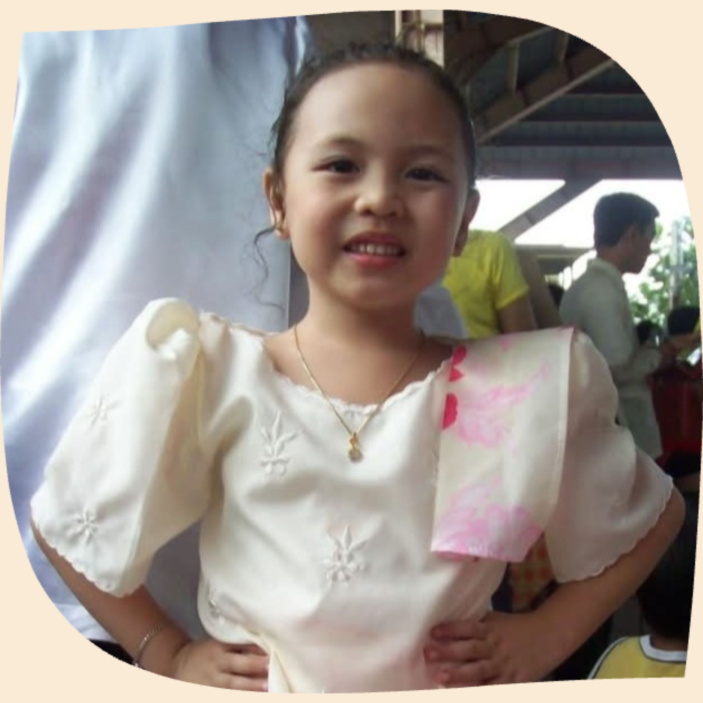

← Back
“Learning to code is like solving puzzles, challenging, but fun when you get it right.”
Personal Information
Hey there!🤗 I’m Allana Jane M. Togonon, I’m 17 years old and was born on November 10, 2007 at Olongapo City, Zambales.
I was raised and started school here in Manila. Currently, I am a first-year student at Manila Central University,
taking up Computer Science and I graduated high school at San Francisco High School under the STEM strand of the Academic Track.
Ever since, I’ve wanted to improve my computer literacy and have always been curious about technology, which is why I chose this course.
I’m passionate about learning programming and exploring how computers work. Although I sometimes find it intimidating and confusing,
I’m excited to keep learning and improving every day.
I haven’t worked on personal projects yet aside from school activities, but lately I’ve been finding coding interesting and fun to do.
Even though it can be frustrating at times as a beginner, I see it as part of the learning process, and it motivates me to grow further.
Hobbies and Interests
- Singing
- Watching Movies/Series (specifically horror/thriller genre)
- Listening to Music
- Hanging out with my friends
- Playing ukelele
- Drawing and reading manhwa/s
- Sleeping
Personality
- Supportive & Thoughtful
- Loyal
- Resistant to Change
- Indecisive
- Introvert
- Approachable & Friendly
- Simple
- Loud & Mischievous
- Trustworthy

“Mistakes are proof that I'm trying.”